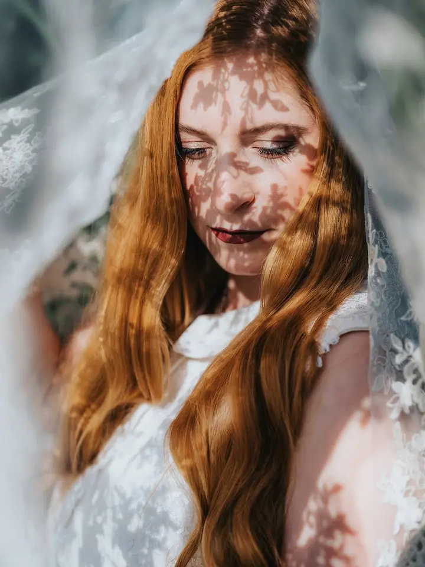
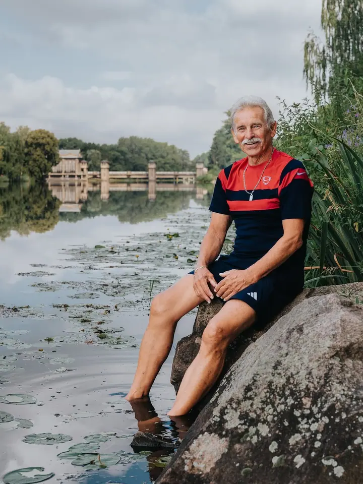
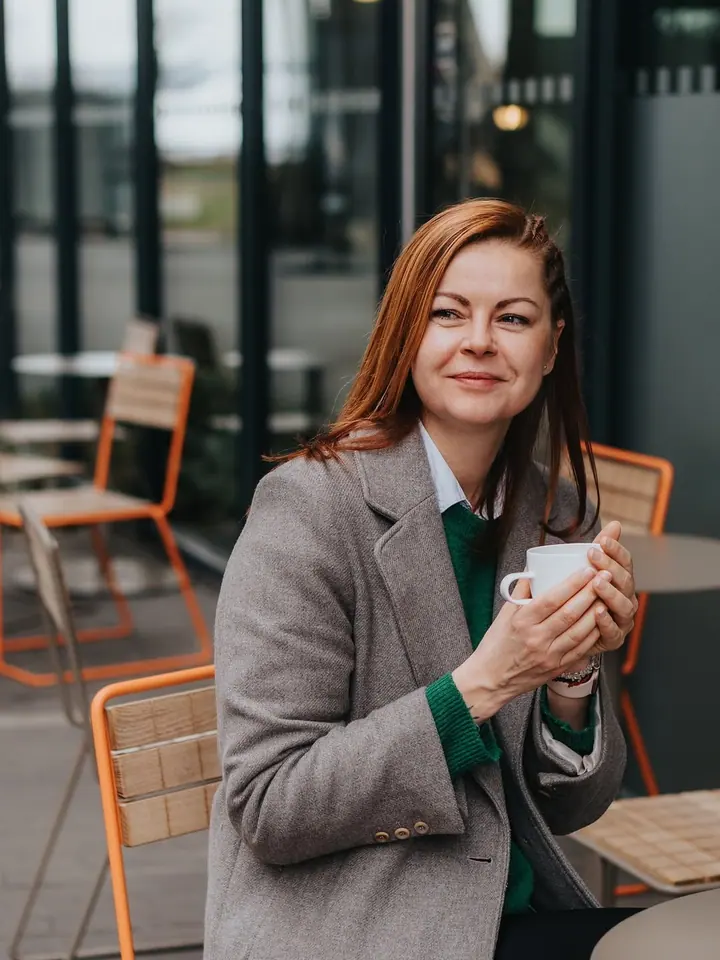
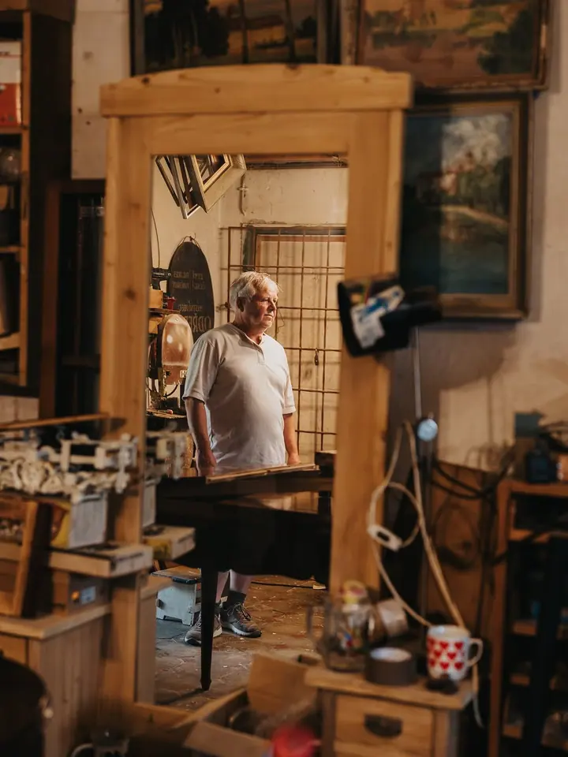
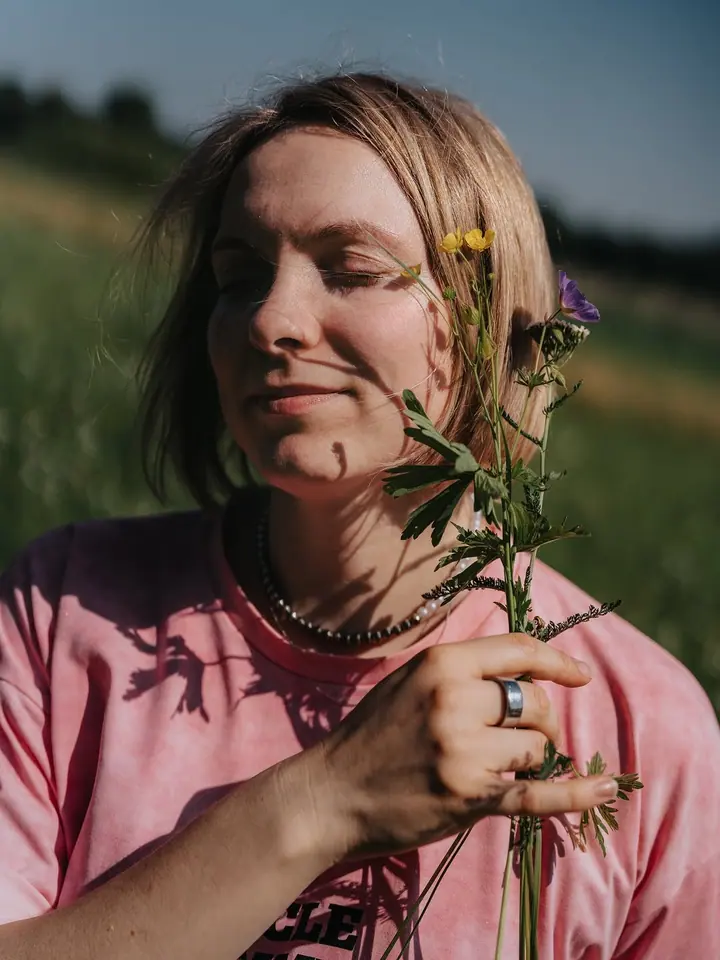

01 / 04
Portréty
Při portrétu je pro mě nejdůležitější, abyste si víc věřili a zůstali sami sebou. Místo přehnané retuše hledám vaši přirozenou krásu a osobnost.
Zeptat se na termín→




Portréty, ve kterých jste sami sebou
Zeptat se na termín →(01) Ahoj
Jmenuji se Adéla Fialová a fotím portréty , společenské a kulturní akce i lidi při jejich práci . Místo přehnaných retuší hledám přirozenou krásu a osobnost každého, koho mám před objektivem.
691lidí sleduje mou práci na Instagramu
246příspěvků s fotkami a příběhy
(02) Co fotím
01 / 04
Při portrétu je pro mě nejdůležitější, abyste si víc věřili a zůstali sami sebou. Místo přehnané retuše hledám vaši přirozenou krásu a osobnost.
Zeptat se na termín→02 / 04
Fotím společenské, kulturní i rodinné události, firemní akce, konference, festivaly a koncerty. Při dlouhodobé spolupráci nabízím výhodnější ceny.
Zeptat se na termín→Dále nabízím
Ke svatbě patří předsvatební schůzka i párové focení na zkoušku. Všechny upravené fotografie dostanete v online albu, na USB disku v bookletu a 100 z nich vytištěných v dárkové krabičce.
↗Naučím vás jednoduché triky a fotografické principy, se kterými budete z mobilu dostávat kvalitní fotky, a ukážu vám rychlou úpravu snímků. Nabízím také mentoring 1:1.
↗(04) Postup
Od první zprávy po hotovou galerii.
Krok 1 z 4
Pošlete mi pár slov o tom, co plánujete, ať už jde o portrét, akci nebo svatbu. Ozvu se vám a společně najdeme termín.
Krok 2 z 4
U portrétu PREMIUM nebo u svatby se před focením potkáme online nebo osobně. Probereme místo, oblečení i to, jak se chcete na fotkách cítit.
Krok 3 z 4
Fotím v klidu a bez strojeného pózování. Na akcích se pohybuji nenápadně, aby zůstala přirozená atmosféra.
Krok 4 z 4
Fotografie vám pošlu do online galerie. Upravuji je jemně, aby zůstaly pravdivé a působily přirozeně.
Místo přehnaných retuší hledám vaši přirozenou krásu
(05) Za objektivem
K fotografii jsem se dostala před více než deseti lety, hlavně díky litoměřickému fotoklubu, který mě inspiroval a umožnil mi poprvé vystavovat. Na svou první zrcadlovku od Canonu jsem si vydělala brigádami o prázdninách na střední škole.
Pak přišlo studium informačních technologií a osm let práce v korporátu i v malých firmách. Postupně jsem si ale uvědomila, co mě doopravdy baví a co mi živí duši. Udělala jsem tlustou čáru a začala fotit na plný úvazek. Bylo to jedno z nejlepších rozhodnutí mého života.
Fotím do novin, mám za sebou několik výstav a byla jsem finalistkou soutěže Nejlepší divadelní fotografie. Když zrovna nefotím, jsem nejspíš v pohybu: běhám, jezdím na kole nebo na běžkách, cvičím jógu nebo jsem na dlouhé procházce se psem Lojzou.
Adéla
Adéla Fialová · Portrétní a eventová fotografka
Balíček STANDARD (1 hodina, 15 upravených fotografií, online galerie pro výběr) stojí 3 500 Kč, další fotky lze dokoupit za 250 Kč/ks. Balíček PREMIUM (1,5 až 2 hodiny, 30 upravených fotografií a konzultace před focením) stojí 4 500 Kč.
První hodina stojí 2 500 Kč a každá další 1 500 Kč. Když spolupracujeme dlouhodobě, nabídnu vám výhodnější cenu.
Svatbu fotím za 2 700 Kč za hodinu. V ceně je předsvatební schůzka, párové focení na zkoušku, všechny upravené fotky v online albu i na USB disku v bookletu a 100 vytištěných fotografií v dárkové krabičce. Za příplatek půjčuji Instax Wide (700 Kč) a rekvizity do fotokoutku (300 Kč).
Nejčastěji v Poděbradech, v Praze a v Litoměřicích. Pokud jste jinde, napište mi a domluvíme se.
(07) Kontakt
Napište pár vět o tom, co si představujete, a termín, který se vám hodí.
adela.fialova@protonmail.com